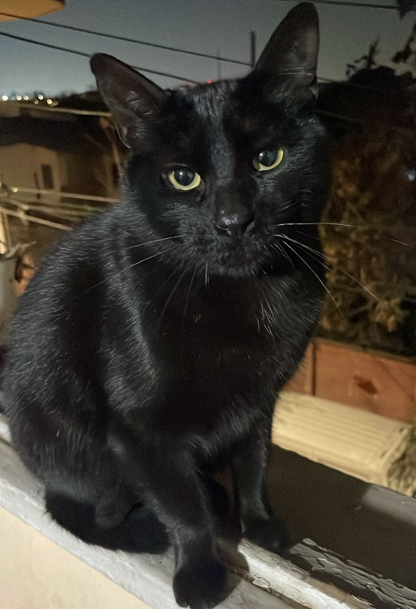
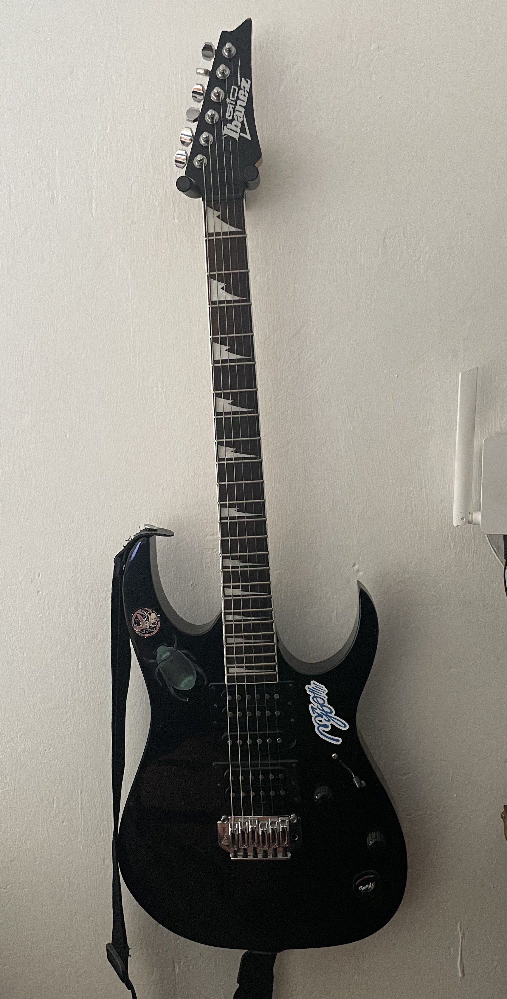
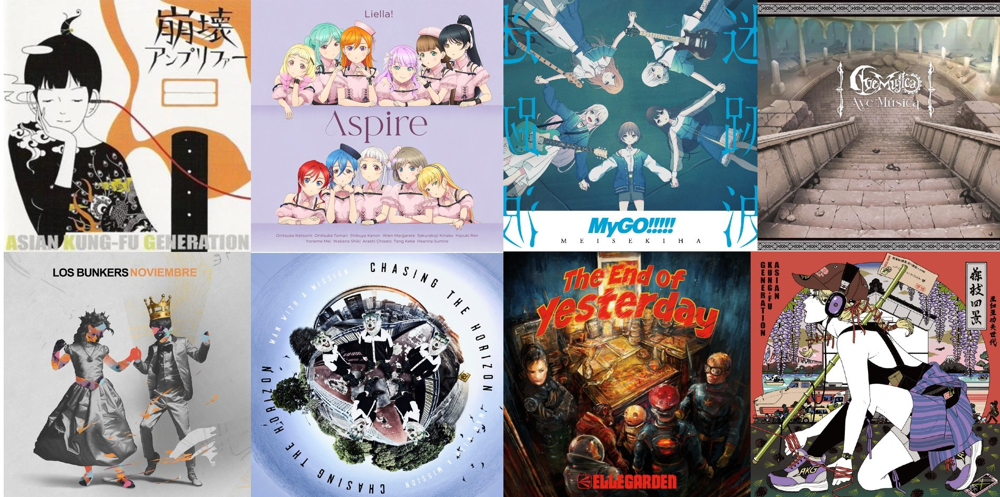

Buenas! Puedes llamarme Gian o Gotoh. Tengo 23 años actualmente y soy estudiante de 3° año en Ingeniería Civil en Ciencias de Datos. Tengo un gatito que se llama Gatito y es el sol de mi vida.

Además de estudiar uso mi tiempo libre para aprender japonés, tocar la guitarra, leer manga/ver anime y hacer videos en Youtube!

En cuanto a música escucho principalmente J-Rock y J-Pop, aunque también me gusta la música de mi país (Chile) y probar a escuchar de todo un poco.

En cuanto a animanga, leo bastante yuri y comedia, pero disfruto también de algunas cosas más serias de vez en cuando.